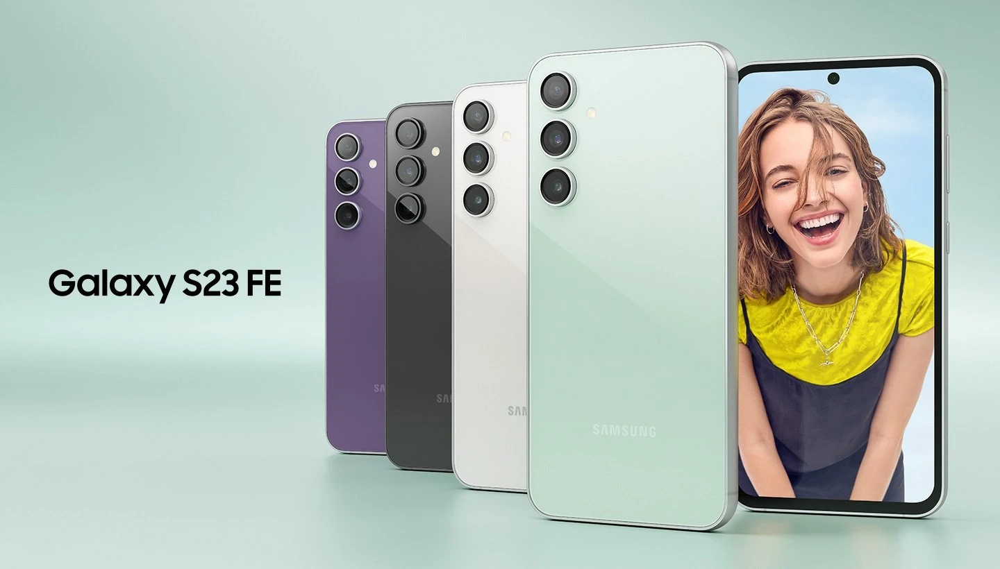
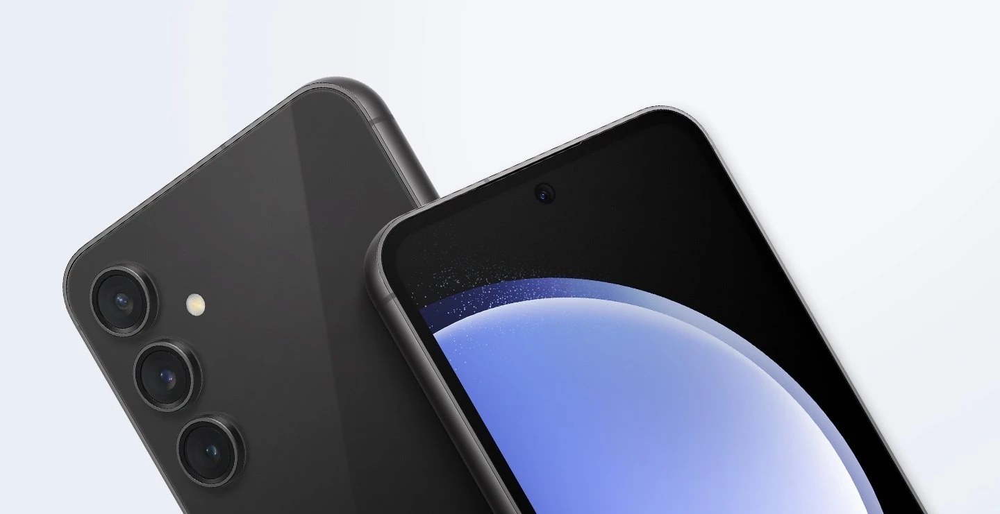

Велич набирає свій початок прямо тут
Тепер епічні моменти стають доступними для всіх. Galaxy S23 FE відкриває безліч можливостей для широкого кола користувачів, які прагнуть відчути неймовірне. Завдяки тривалому часу автономної роботи і вражаючій нічній зйомці, цей смартфон стає вашим квитком до незабутніх епічних спогадів.
*Вибір кольорів може різнитися в залежності від країни/регіону чи оператора.
Завжди актуальний дизайн
Новий Galaxy S23 FE продовжує традицію культового дизайну серії Galaxy S23, втілюючи класичну естетику та зберігаючи ряд практичних функцій.
*Графічне зображення створено з інформаційною метою.
Вишуканість відтінків, які привертають увагу
Виберіть один із чотирьох відтінків: м'ятний, графітовий, кремовий та фіолетовий.
Кожен із них призначений для створення
чарівної гармонії в металевому корпусі.
*Вибір кольорів може різнитися в залежності від країни/регіону чи оператора.